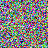
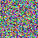
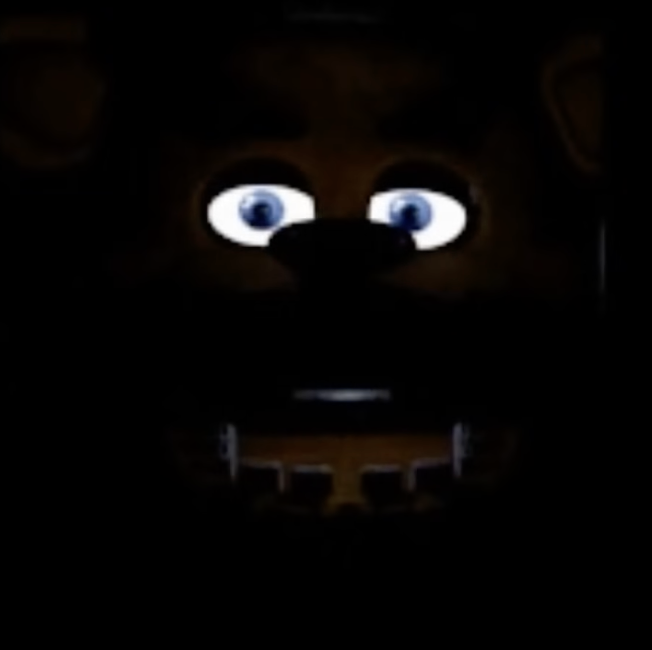

<!DOCTYPE html>
<html lang="en">
<head>
<meta charset="UTF-8">
<meta name="viewport" content="width=device-width, initial-scale=1.0">
<title>Five Nights at Crypto's — Crypto 101 Bonus</title>
<link rel="preconnect" href="https://fonts.googleapis.com">
<link rel="preconnect" href="https://fonts.gstatic.com" crossorigin>
<link href="https://fonts.googleapis.com/css2?family=Fraunces:opsz,wght@9..144,400;9..144,600;9..144,900&family=Hanken+Grotesk:wght@400;500;700&family=JetBrains+Mono:wght@500;700&display=swap" rel="stylesheet">
<style>
  :root{
    --bg:#000000; --panel:#0d0c0a; --panel2:#141210; --edge:#2a2620;
    --ink:#e8e2d4; --dim:#7a7466;
    --accent:#b23a26; --gold:#c79338; --ok:#62ab77;
    --disp:"Fraunces",Georgia,serif; --ui:"Hanken Grotesk",system-ui,sans-serif;
    --mono:"JetBrains Mono",ui-monospace,Menlo,monospace;
  }
  *{box-sizing:border-box}
  body{margin:0; color:var(--ink); font-family:var(--ui); background:var(--bg); min-height:100vh; padding:40px 18px 90px;
    overflow-x:hidden}
  .wrap{max-width:780px; margin:0 auto}
  header{border-bottom:2px solid var(--edge); padding-bottom:18px; margin-bottom:26px}
  h1{font-family:var(--disp); font-weight:900; font-size:clamp(2.1rem,6.5vw,3.3rem); line-height:.96; margin:0; color:var(--ink)}
  h1 em{font-style:italic; font-weight:400; color:var(--accent)}
  header p{font-family:var(--disp); font-size:1.02rem; line-height:1.5; opacity:.8; margin:12px 0 0; max-width:56ch}

  .locked{font-family:var(--mono); font-size:.9rem; color:var(--dim); text-align:center; padding:80px 20px}

  /* --- header button row: reset · confetti. Icon-only, >=40px touch targets.
     NO theme button here: this module is a deliberately single-palette black skin — it has no
     [data-theme] rules at all, so a toggle would be an inert control that lies about what it
     does. FNAC stays black-only: the dark is the point, and the intro creep assumes it. --- */
  .kicker{font-family:var(--mono); font-size:.7rem; letter-spacing:.28em; text-transform:uppercase;
  /* home link back to Gaura's Domain (the /crypto/ landing page) — matches ceasar's, retinted
     to the flat skin's tokens (ceasar uses its analog --signal/--brass). */
  .home-link{color:var(--accent); text-decoration:none; font:inherit; letter-spacing:inherit;
    border-bottom:1px solid transparent; padding-bottom:1px; transition:color .18s, border-color .18s}
  .home-link:hover, .home-link:focus-visible{color:var(--gold); border-bottom-color:currentColor}
  .home-link:focus-visible{outline:none}
    color:var(--accent); display:flex; justify-content:space-between; align-items:center; margin-bottom:10px}
  .hdr-btns{display:flex; gap:8px; align-items:center; flex:0 0 auto}
  .hdr-btn{width:40px; height:40px; padding:0; display:inline-flex; align-items:center;
    justify-content:center; line-height:0; border-radius:6px; cursor:pointer; color:var(--ink);
    background:linear-gradient(#1b1813,#111008); border:1px solid var(--edge);
    transition:color .18s, background .18s, border-color .18s, opacity .18s}
  .hdr-btn svg{width:19px; height:19px; pointer-events:none}
  .hdr-btn:hover{border-color:var(--dim)}
  .hdr-btn[aria-disabled="true"]{opacity:.45; cursor:default}
  .hdr-btn.unlocked{color:var(--gold)}
  .hdr-btn.unlocked svg{fill:currentColor}
  .hdr-btn.armed{color:#fff; background:var(--accent); border-color:var(--accent)}
  @media(max-width:430px){ .kicker{gap:10px} .kicker>span{font-size:.58rem; letter-spacing:.12em; min-width:0} }

  .grid{display:grid; gap:18px}
  .stage{background:var(--panel); border:1px solid var(--edge); border-radius:8px; padding:20px 22px; min-width:0}
  .stage.placeholder{opacity:.45}
  .stage .lab{font-family:var(--mono); font-size:.66rem; letter-spacing:.2em; text-transform:uppercase; color:var(--gold)}
  .stage h2{font-family:var(--disp); font-size:1.4rem; margin:6px 0 10px}

  /* --- night bodies. No helper widgets live here any more: FNAC assumes you bring your own
     tools (xxd, CyberChef, python), so a night is prose + files + a flag box. --- */
  .brief{font-family:var(--mono); font-size:.82rem; line-height:1.6; color:var(--dim); margin:0 0 12px}
  .files{display:flex; gap:14px; flex-wrap:wrap; margin:12px 0}
  .dl{color:var(--gold); font-family:var(--mono); font-size:.78rem; border:1px solid var(--edge);
    border-radius:6px; padding:10px 14px; text-decoration:none; display:inline-block}
  .dl:hover{border-color:var(--gold)}
  .thumb{width:96px; height:96px; image-rendering:pixelated; border:1px solid var(--edge);
    border-radius:4px; display:block; margin-bottom:6px}
  .hintimg{max-width:220px; width:100%; border:1px solid var(--edge); border-radius:6px; display:block; margin:12px 0}
  /* the Night 3 ciphertext, printed as-is. Wraps hard: it is 7-bit garbage with no spaces you
     can rely on, and a phone must never scroll sideways because of it. */
  .cipher{font-family:var(--mono); font-size:.72rem; line-height:1.55; color:var(--ink); background:#000;
    border:1px solid var(--edge); border-radius:5px; padding:12px; margin-top:8px;
    white-space:pre-wrap; overflow-wrap:anywhere; word-break:break-word; max-height:220px; overflow-y:auto}
  .submit{display:flex; gap:9px; margin-top:16px; flex-wrap:wrap}
  .flag-input{flex:1 1 180px; min-width:0; font-family:var(--mono); background:#000; color:var(--gold);
    border:1px solid var(--edge); border-radius:6px; padding:10px}
  .flag-check{font-family:var(--mono); font-weight:700; background:var(--accent); color:#fff;
    border:none; border-radius:6px; padding:10px 16px; cursor:pointer; min-height:44px}
  .verdict{font-family:var(--mono); font-size:.76rem; margin-top:8px}

  /* --- intro creep overlay ---
     Every flicker step is set from JS as an inline style; nothing here animates the flicker,
     because CSS transitions are paused in a backgrounded automation tab and the measured
     flicker must be the one a student actually sees. Two CSS animations run, both far below
     anything flash-relevant: the slow eye-glow pulse (2.8s, ~0.36Hz) and the failing-light
     flicker (3.1s cycle carrying exactly 3 dips, ~0.97 light/dark cycles per second, each dip
     held ~200ms so it is above the flash verifier's 180ms sampling guard rather than aliased
     under it). The two periods deliberately do not divide each other, so the combined motion
     does not visibly repeat inside the 7.8s the eyes are on screen. */
  #creep{position:fixed; inset:0; z-index:9999; background:#000; opacity:0; display:none;
    align-items:center; justify-content:center; overflow:hidden}
  #creep.on{display:flex}
  /* small and far away in the dark, NOT filling the frame — the distance is the scare. ~5x down
     from the old min(92vw,660px): 132px on a desktop or a projector, with an 84px floor so it
     does not vanish on a 360px phone. Square asset, so width alone bounds it. */
  #creep-eyes{position:relative; opacity:0; width:clamp(84px,20vw,132px); line-height:0}
  #creep-eyes img{display:block; width:100%; height:auto; mix-blend-mode:screen}
  /* the pulse: a bloom sitting ON the two bright eyes, in screen blend. Not a brightness or
     opacity ramp of the whole picture — the dark 95% of the frame never moves. Opacities are a
     quarter of the original bloom; the 5x size cut already shrank its footprint by the same
     factor, so the two multiply. */
  #creep-glow{position:absolute; inset:0; mix-blend-mode:screen; pointer-events:none; opacity:.12;
    background:
      radial-gradient(circle at 34.5% 31%, rgba(255,236,205,.42) 0%, rgba(255,190,110,.16) 34%, rgba(0,0,0,0) 62%),
      radial-gradient(circle at 64.5% 31%, rgba(255,236,205,.42) 0%, rgba(255,190,110,.16) 34%, rgba(0,0,0,0) 62%)}
  #creep-eyes.breathe #creep-glow{animation:creep-breathe 2.8s ease-in-out infinite}
  @keyframes creep-breathe{ 0%,100%{opacity:.08; transform:scale(1)} 50%{opacity:.24; transform:scale(1.12)} }
  /* Failing light on top of the breath. Deliberately NOT a sine and NOT evenly spaced: the three
     dips sit at 7.5% / 31% / 66% of the cycle at three different depths, so it reads as a bad
     contact rather than an animation. It rides the `flick` class, which — unlike `breathe` — is
     NOT removed at the restore boundary: snapping brightness back to 1 at the exact instant the
     600ms fade starts would be an upward luminance step. The flicker dies out with the fade, and
     creepFinish() drops the class. Filter (not opacity) so it never fights the inline opacity JS
     drives the flicker-in and the fade with. */
  #creep-eyes.flick{animation:creep-flicker 3.1s linear infinite}
  @keyframes creep-flicker{
    0%,7%{filter:brightness(1)}      7.5%{filter:brightness(.72)}
    13.5%{filter:brightness(.80)}    14%{filter:brightness(1)}
    30.5%{filter:brightness(1)}      31%{filter:brightness(.68)}
    37.5%{filter:brightness(.74)}    38%{filter:brightness(1)}
    65.5%{filter:brightness(1)}      66%{filter:brightness(.82)}
    72%{filter:brightness(.76)}      72.5%{filter:brightness(1)}
    100%{filter:brightness(1)}
  }
  /* reduced motion suppresses BOTH — a flicker is the exact thing this query exists to stop */
  @media(prefers-reduced-motion:reduce){
    #creep-eyes.breathe #creep-glow{animation:none; opacity:.16}
    #creep-eyes.flick{animation:none; filter:none}
  }

  /* deliberately near-invisible: it is a way back in for whoever wants one, not a feature. */
  /* in the page flow, not fixed: it belongs at the very bottom of the document, past everything,
     and a fixed button would sit on top of Night 1's SUBMIT on a phone. */
  #spook{display:block; width:max-content; margin:70px 0 0 auto; background:#080807; color:#151310;
    border:1px solid #121110; border-radius:5px; font-family:var(--mono); font-size:.6rem;
    padding:6px 8px; cursor:pointer}
  #spook:hover{color:#2a2620}
</style>
</head>
<body>
<!-- Header-row icon sprite. Shapes after Lucide (ISC licence, lucide.dev — ISC License, Copyright (c) for portions of Lucide are held by Cothema 2020), redrawn inline:
     no CDN, no icon font, no external request. Deliberately a SIBLING of #app — renderModule()
     replaces #app's innerHTML (and konami can call it again), which would wipe a sprite inside.
     Stroke/fill are set on each button's own <svg> so they inherit into the symbol. -->
<svg width="0" height="0" aria-hidden="true" focusable="false" style="position:absolute">
  <symbol id="i-reset" viewBox="0 0 24 24"><path d="M20.5 12a8.5 8.5 0 1 1-2.49-6.01"/><path d="M22 6h-4V2"/></symbol>
  <symbol id="i-lock" viewBox="0 0 24 24"><rect x="3" y="11" width="18" height="11" rx="2"/><path d="M7 11V7a5 5 0 0 1 10 0v4"/></symbol>
  <symbol id="i-star" viewBox="0 0 24 24"><path d="M12 2.6 14.26 8.89 20.94 9.1 15.66 13.19 17.53 19.6 12 15.85 6.47 19.6 8.34 13.19 3.06 9.1 9.74 8.89Z"/></symbol>
</svg>
<div class="wrap" id="app"></div>
<script>
function ctfUid(){
  const m=document.cookie.match(/(?:^|; )ctf-uid=([^;]+)/); if(m) return m[1];
  const v=Math.random().toString(36).slice(2,10)+Date.now().toString(36).slice(-4);
  document.cookie='ctf-uid='+v+';path=/;max-age=31536000;samesite=lax'; return v;
}
const fnv=s=>{ let h=2166136261>>>0; for(let i=0;i<s.length;i++){ h^=s.charCodeAt(i); h=Math.imul(h,16777619);} return h>>>0; };
ctfUid(); // ensures the shared ctf-uid cookie exists before the confetti engine seeds off it
window.FX_TOTAL = 3; // nights 1-3 are the only ones that are real (4-7 are ready:false placeholders
                      // in STAGES below and cannot be solved); hard-coded to what ships, NOT derived
                      // from STAGES.length — raise this by hand as each placeholder night goes live,
                      // one at a time, or completion can never register and this module's own
                      // confetti can never fire.

/* ---- the gate ----------------------------------------------------------------------------
   FNAC opens once ALL THREE beginner modules are finished. Completion is asked of the shared
   confetti engine (window.fxModuleComplete), which is the only thing that knows each module's
   puzzle count — this page never counts anybody else's flags, and there is no per-module
   "unlocked" cookie any more. The old `ctf-fnac-unlocked` cookie is deliberately NOT honoured:
   it meant "Encoding is done", which under the new rule is one third of the requirement, so
   reading it would grandfather people straight past Caesar and XOR. Stale copies are inert.
   The konami bypass therefore rides on its OWN cookie name — a name no old browser can already
   be carrying — so "ignore the old cookie" and "konami still unlocks, permanently" can both hold. */
const REQUIRED = [
  {id:'caesar',   label:'Caesar',   href:'../ceasar/'},
  {id:'xor',      label:'XOR',      href:'../xor/'},
  {id:'encoding', label:'Encoding', href:'../encoding/'}
];
const BYPASS_COOKIE = 'ctf-fnac-bypass';
const bypassed = () => /(?:^|; )ctf-fnac-bypass=1(?:;|$)/.test(document.cookie);
const setBypass = () => { document.cookie = BYPASS_COOKIE+'=1;path=/;max-age=31536000;samesite=lax'; };
const moduleDone = id => !!(window.fxModuleComplete && window.fxModuleComplete(id));
function unlocked(){ return bypassed() || REQUIRED.every(m => moduleDone(m.id)); }

// Locked screen: says what is actually required and which of it is done. Every unfinished module
// is a link — one click also REPAIRS its entry in the engine's index, which is how someone who
// finished a module before this gate existed gets counted.
function lockedMarkup(){
  const rows = REQUIRED.map(m=>{
    const done = moduleDone(m.id);
    const p = window.fxModuleProgress && window.fxModuleProgress(m.id);
    const count = (!done && p && p.t) ? ` <span style="opacity:.55">${p.n}/${p.t}</span>` : '';
    return done
      ? `<div>✓ ${m.label}</div>`
      : `<div>· <a href="${m.href}" style="color:var(--gold)">${m.label}</a>${count}</div>`;
  }).join('');
  // The locked screen replaces the whole app, header included — so it must carry its own way back
  // to the directory, or a locked student is stranded with only the browser Back button.
  return `<div class="locked">nothing here yet.<br>finish all three first:
    <div style="margin-top:14px; line-height:1.9; display:inline-block; text-align:left">${rows}</div>
    <div style="margin-top:26px"><a href="../" style="color:var(--gold)">&larr; Gaura's Domain</a></div></div>`;
}

const app = document.getElementById('app');

const ICON_SVG = id => `<svg viewBox="0 0 24 24" fill="none" stroke="currentColor" stroke-width="2" stroke-linecap="round" stroke-linejoin="round" aria-hidden="true"><use href="#i-${id}"/></svg>`;

function renderModule(){
  app.innerHTML = `
    <header>
      <div class="kicker"><a class="home-link" href="../">Gaura&#39;s Domain</a><div class="hdr-btns">
        <button id="reset-mod" class="hdr-btn" type="button" aria-label="Reset module progress" title="Reset module progress">${ICON_SVG('reset')}</button>
        <button id="fx-btn" class="hdr-btn" type="button" aria-disabled="true" aria-label="Confetti locked" title="Confetti locked">${ICON_SVG('lock')}</button>
      </div></div>
      <h1>Five Nights at <em>Crypto's</em></h1>
      <p>these challenges will hurt your brain more than the bite of 87</p>
    </header>
    <div class="grid" id="stages"></div>
  `;
  renderStages();
  wireHeaderButtons();
  installCreep();
}

// ---- header button row: reset · confetti ----
// Two buttons, not three: this module is a single-palette black skin with no [data-theme] rules,
// so there is no light mode for a theme button to switch to.
// renderModule() can run TWICE (gate render, then the konami unlock), so the buttons are re-wired
// per render, while the engine's 'fx:state' listener is registered ONCE at top level below and
// simply no-ops when the header isn't on the page (locked state renders no header at all).
function wireHeaderButtons(){
  const label=(btn,text)=>{ btn.title=text; btn.setAttribute('aria-label',text); };
  syncFxButton();
  const fx=document.getElementById('fx-btn');
  if(fx) fx.addEventListener('click', ()=>{ if(window.fxIsComplete && window.fxIsComplete() && window.fxReplay) window.fxReplay(); });

  const rb=document.getElementById('reset-mod'); if(!rb) return;
  let armed=false, t;
  const REST='Reset module progress';
  rb.addEventListener('click', ()=>{
    if(!armed){ armed=true; rb.classList.add('armed'); label(rb,'Confirm — erase this module’s progress?');
      t=setTimeout(()=>{ armed=false; rb.classList.remove('armed'); label(rb,REST); }, 3500); }
    else { clearTimeout(t); if(window.fxReset) window.fxReset(); location.reload(); }
  });
}

// lock while the nights are unfinished, star once all seven are captured. Completion comes from
// the shared confetti engine — this page never re-reads the solved-store key itself.
function syncFxButton(){
  const fx=document.getElementById('fx-btn'); if(!fx) return;
  const done=!!(window.fxIsComplete && window.fxIsComplete());
  fx.classList.toggle('unlocked',done);
  const u=fx.querySelector('use'); if(u) u.setAttribute('href', done?'#i-star':'#i-lock');
  // aria-disabled rather than [disabled]: keeps the "how do I unlock this" tooltip readable.
  fx.setAttribute('aria-disabled', done?'false':'true');
  const text = done ? 'Replay your victory confetti'
                    : 'Locked — capture every flag in this module to unlock the confetti';
  fx.title=text; fx.setAttribute('aria-label',text);
}
// registered before engine.js (the last script on the page), so the engine's init dispatch lands
document.addEventListener('fx:state', syncFxButton);

// small deterministic rotation per stage id, stable across reloads — "slightly off," not jittery.
// Suppressed on narrow screens: the rotation widens each card's bounding box by
// height * sin(angle), which on a 360px phone is enough to push the document past the viewport.
function seededRotation(id){
  if(window.matchMedia && window.matchMedia('(max-width:520px)').matches) return 0;
  return (fnv('rot:'+id) % 500) / 100 - 2.5; // -2.5deg .. +2.5deg
}

const STAGES = [
  {id:'night1', title:'Night 1 · Meta Parts', ready:true},
  {id:'night2', title:'Night 2 · Bit Weaving', ready:true},
  {id:'night3', title:'Night 3 · Triple T', ready:true},
  {id:'night4', title:'Night 4', ready:false},
  {id:'night5', title:'Night 5', ready:false},
  {id:'nightmare', title:'Nightmare', ready:false},
  {id:'abyss', title:'Abyss', ready:false},
];

function renderStages(){
  const wrap = document.getElementById('stages');
  STAGES.forEach(s=>{
    const el = document.createElement('div');
    el.className = 'stage' + (s.ready ? '' : ' placeholder');
    const rot = seededRotation(s.id);
    if(rot) el.style.transform = `rotate(${rot}deg)`;
    el.id = 'stage-' + s.id;
    if(s.ready){
      el.innerHTML = `<div class="lab">${s.id}</div><h2>${s.title}</h2><div class="body"></div>`;
    } else {
      el.innerHTML = `<div class="lab">${s.id}</div><h2>${s.title}</h2><div class="body" style="font-family:var(--mono);font-size:.8rem;color:var(--dim)">not yet.</div>`;
    }
    wrap.appendChild(el); // append BEFORE wiring — builders look up this element by id via getElementById
    if(s.ready){
      const body = el.querySelector('.body');
      if(s.id === 'night1') buildNight1(body);
      if(s.id === 'night2') buildNight2(body);
      if(s.id === 'night3') buildNight3(body);
    }
  });
}

// ---- shared flag-check helper, used by every night ----
let storedFnacSolved = new Set();
try{ storedFnacSolved = new Set(JSON.parse(localStorage.getItem('ctf-solved:v2:fnac') || '[]')); }catch(e){}

const SUBMIT_HTML = `
    <div class="submit">
      <input class="flag-input" placeholder="Put flag here" autocapitalize="none" autocorrect="off" autocomplete="off" spellcheck="false">
      <button class="flag-check" type="button">SUBMIT</button>
    </div>
    <div class="verdict"></div>`;

function wireFlagCheck(bodyEl, stageId, answer){
  const input = bodyEl.querySelector('.flag-input');
  const verdict = bodyEl.querySelector('.verdict');
  const stageEl = document.getElementById('stage-' + stageId);
  function capture(){
    stageEl.classList.add('solved');
    verdict.textContent = 'correct — captured';
    verdict.style.color = 'var(--ok)';
    storedFnacSolved.add(stageId);
    try{ localStorage.setItem('ctf-solved:v2:fnac', JSON.stringify([...storedFnacSolved])); }catch(e){}
    if(window.fxSolved) window.fxSolved(stageId);
  }
  function check(){
    const v = input.value.trim();
    if(v.toLowerCase() === answer.toLowerCase()) capture();
    else if(v){ verdict.textContent = 'not it.'; verdict.style.color = 'var(--accent)'; }
  }
  bodyEl.querySelector('.flag-check').onclick = check;
  input.addEventListener('keydown', e=>{ if(e.key==='Enter') check(); });
  if(storedFnacSolved.has(stageId)) capture();
}

// ---- Night 1 · Meta Parts ----
function buildNight1(bodyEl){
  bodyEl.innerHTML = `
    <p class="brief">sometimes you need to concatenate evidence.</p>
    <div class="files">
      <div><a href="assets/night1/night1-a.png" download class="dl">↓ night1-a.png</a></div>
      <div><a href="assets/night1/night1-b.png" download class="dl">↓ night1-b.png</a></div>
    </div>` + SUBMIT_HTML;
  wireFlagCheck(bodyEl, 'night1', 'flag{tune_into_the_static}');
}

// ---- Night 2 · Bit Weaving ----
function buildNight2(bodyEl){
  bodyEl.innerHTML = `
    <p class="brief">Whoops i undid it like a zipper at the atomic level...</p>
    <div class="files">
      <a href="assets/night2/night2-a.bin" download class="dl">↓ night2-a.bin</a>
      <a href="assets/night2/night2-b.bin" download class="dl">↓ night2-b.bin</a>
    </div>` + SUBMIT_HTML;
  wireFlagCheck(bodyEl, 'night2', 'flag{data_bender}');
}

// ---- Night 3 · Triple T ----
// The ciphertext is fetched rather than inlined so the block on the page and the downloadable
// file are the same bytes by construction. arrayBuffer, never .text(): the message contains NULs
// and other bytes that are not valid UTF-8, and it is rendered by a latin-1 decode so what you
// read here is byte-for-byte what you downloaded.
const latin1 = b => { let s=''; for(let i=0;i<b.length;i++) s+=String.fromCharCode(b[i]); return s; };

function buildNight3(bodyEl){
  bodyEl.innerHTML = `
    <!-- copy: author -->
    <p class="brief">Tung Tung is love. Tung Tung is life. But I have to ask myself, am I Exclusive
      to Tung Tung? OR, do I have space in my heart for other brainrot?
      I toss and turn in my Crib, sleepless...</p>
    
    <div class="files">
      <a href="assets/night3/night3-a.txt" download class="dl">↓ night3-a.txt</a>
    </div>
    <div class="cipher" id="night3-cipher">loading the message…</div>` + SUBMIT_HTML;
  const box = bodyEl.querySelector('#night3-cipher');
  fetch('assets/night3/night3-a.txt').then(r=>{
    if(!r.ok) throw new Error(r.status);
    return r.arrayBuffer();
  }).then(buf=>{ box.textContent = latin1(new Uint8Array(buf)); })
    .catch(()=>{ box.textContent = "couldn't load the message — download the file and read it yourself."; });
  wireFlagCheck(bodyEl, 'night3', 'flag{stop_scrolling}');
}

/* =========================================================================================
   INTRO CREEP SEQUENCE
   -----------------------------------------------------------------------------------------
   Fires once per person, at most, on a 1-in-5 roll per visit, the first time they scroll.

   PHOTOSENSITIVITY. This page's background is already #000000, so the "flicker" is a
   near-black page going fully black and a mostly-black picture fading in on top of black —
   the large-area luminance excursion WCAG 2.3.1 bounds is inherently tiny here. It is
   measured anyway by tools/verify_fnac_flash_safety.mjs, which drives this exact code and
   scores real screenshots. Two rules are baked in regardless of what the measurement says:
     * every flicker cycle is 750ms. That is deliberately slower than "three cycles a
       second": flash_analysis.mjs (shared with the hash module) counts EVERY opposing
       luminance transition as a flash, so a square wave at f Hz scores 2f — the conservative
       reading of WCAG 2.3.1, and the one this repo already holds itself to. 750ms scores
       2.67/sec under that convention. The first cut of this sequence used a 400ms cycle and
       MEASURED 6/sec; the measurement set this number, not the other way round. Every held
       state is >= 330ms, so a ~30Hz sampler cannot miss an extreme;
     * the only bright thing on screen is the eyes, and the pulse is a bloom ON them, not a
       brightness ramp of the frame.
   prefers-reduced-motion: reduce skips the flicker entirely (fade → hold → static eyes).
   ========================================================================================= */
const CREEP = {
  FLICKER_ON:330,   // page visible (overlay transparent)
  FLICKER_OFF:420,  // page dark (overlay opaque) — 750ms cycle, 2.67 transitions/sec
  FLICKER_CYCLES:3, // 3*420 + 2*330 = 1920ms of flicker
  HOLD:2000,        // dark and silent
  EYES:7800,        // eyes on screen; scare.mp3 is hard-cut at exactly this point
  RESTORE:600,      // lights-on fade back
  FADE:600,         // reduced-motion fade instead of the flicker
  SKIP_GRACE:500    // clicks in this window after the start do not count toward the 3-click skip
};
const CREEP_COOKIE='ctf-fnac-creep';
const creepFired = () => /(?:^|; )ctf-fnac-creep=1(?:;|$)/.test(document.cookie);
const setCreepFired = v => { document.cookie = CREEP_COOKIE+'='+(v?'1':'0')+';path=/;max-age=31536000;samesite=lax'; };
// overridable purely so the test can prove the wiring reads the roll, both ways
const creepRandom = () => (window.__creepRandom || Math.random)();
const shouldFire = () => !creepFired() && creepRandom() < 0.2;

let creepState = { phase:'idle', timers:[], log:[], clicks:0, startedAt:0, el:null, audio:{} };

// Keyboard easter eggs must never fire while someone is typing in a field. This page has three
// flag inputs; a student typing a flag is not asking for a jump scare, and the konami handler
// below (which RE-RENDERS the module, wiping what they typed) had the same hole before this.
const typingInField = e => {
  const t = e.target;
  return !!t && (t.tagName === 'INPUT' || t.tagName === 'TEXTAREA' || t.isContentEditable);
};

// "scary": type it and the NEXT click is a guaranteed scare — the keyboard sibling of the
// "spook me again" button, so it overrides both the 1-in-5 roll and the already-fired cookie.
// The arming is spent by that click whether or not the sequence runs to the end; type it again
// to re-arm. Typing it twice does not stack — it is a boolean, not a counter.
const SCARY = 'scary';
let creepArmed = false;

function creepLog(phase){
  creepState.phase = phase;
  creepState.log.push({phase, t: Math.round(performance.now())});
}
function creepAt(ms, fn){ creepState.timers.push(setTimeout(fn, ms)); }
function creepClearTimers(){ creepState.timers.forEach(clearTimeout); creepState.timers = []; }

// audio is best-effort in every direction: a scroll is not a user activation gesture in Chrome,
// so play() can reject. The visual must run regardless and must never wait on a sound.
function creepPlay(name, src){
  try{
    const a = creepState.audio[name] || (creepState.audio[name] = new Audio(src));
    a.currentTime = 0;
    const p = a.play();
    if(p && p.catch) p.catch(()=>{});
    return a;
  }catch(e){ return null; }
}
function creepStopAudio(){
  Object.values(creepState.audio).forEach(a=>{ try{ a.pause(); }catch(e){} });
}

function creepBuild(){
  let el = document.getElementById('creep');
  if(el) return el;
  el = document.createElement('div');
  el.id = 'creep';
  el.setAttribute('aria-hidden','true');
  el.innerHTML = `<div id="creep-eyes"><div id="creep-glow"></div></div>`;
  document.body.appendChild(el);
  return el;
}

function creepStart(){
  if(creepState.phase !== 'idle') return;
  setCreepFired(true);              // set up front: a mid-sequence skip still counts as fired
  creepState.clicks = 0;      // the tap that started this must never count toward the skip
  creepState.startedAt = performance.now();
  creepState.log = [];
  const el = creepBuild();
  creepState.el = el;
  const eyes = el.querySelector('#creep-eyes');
  eyes.classList.remove('breathe','flick');
  eyes.style.opacity = '0';
  el.classList.add('on');
  el.style.transition = 'none';
  el.style.opacity = '0';
  document.addEventListener('keydown', creepKey, true);
  document.addEventListener('pointerdown', creepClick, true);

  const reduced = window.matchMedia && window.matchMedia('(prefers-reduced-motion: reduce)').matches;
  creepLog('flicker');
  creepPlay('flicker','assets/creep/flicker.mp3');

  // one timeline, computed up front, so every phase boundary is a known instant the test can
  // assert against instead of an accumulated side effect.
  const flickerLen = reduced ? CREEP.FADE
    : CREEP.FLICKER_CYCLES*CREEP.FLICKER_OFF + (CREEP.FLICKER_CYCLES-1)*CREEP.FLICKER_ON;
  const darkAt = flickerLen;
  const eyesAt = darkAt + CREEP.HOLD;
  const restoreAt = eyesAt + CREEP.EYES;

  if(reduced){
    // no flicker at all: one smooth fade to black, same total time to the dark hold
    el.style.transition = `opacity ${CREEP.FADE}ms linear`;
    el.style.opacity = '1';
  } else {
    // every step is an inline style set from a timer — no CSS transition, no rAF
    let t = 0;
    for(let i=0;i<CREEP.FLICKER_CYCLES;i++){
      creepAt(t, ()=>{ el.style.opacity = '1'; });
      t += CREEP.FLICKER_OFF;
      if(i < CREEP.FLICKER_CYCLES-1){
        creepAt(t, ()=>{ el.style.opacity = '0'; });
        t += CREEP.FLICKER_ON;
      }
    }
  }
  creepAt(darkAt, ()=>{ el.style.transition='none'; el.style.opacity='1'; creepStopAudio(); creepLog('dark'); });

  creepAt(eyesAt, ()=>{
    creepLog('eyes');
    creepPlay('scare','assets/creep/scare.mp3');
    if(reduced){
      eyes.style.transition = `opacity ${CREEP.FADE}ms linear`;
      eyes.style.opacity = '.92';
      eyes.classList.add('breathe','flick');
    }
  });
  if(!reduced){
    // eyes flicker in on the same 750ms cycle, then stay and breathe
    let t = eyesAt;
    for(let i=0;i<3;i++){
      creepAt(t, ()=>{ eyes.style.opacity = '.92'; });
      t += CREEP.FLICKER_OFF;
      creepAt(t, ()=>{ eyes.style.opacity = '0'; });
      t += CREEP.FLICKER_ON;
    }
    creepAt(t, ()=>{ eyes.style.opacity = '.92'; eyes.classList.add('breathe','flick'); });
  }
  // hard cut, no fade: playback is stopped here at exactly CREEP.EYES. The shipped scare.mp3 is
  // trimmed by tools/build_fnac_assets.py to 7.93s — a hair past this cut, never short of it, so
  // the sound is still going when we kill it. (The 62s original lives in fnac-assets/.)
  creepAt(restoreAt, ()=>{
    creepStopAudio();
    creepLog('restore');
    creepPlay('lights','assets/creep/lights-on.mp3');
    eyes.classList.remove('breathe');
    eyes.style.transition = `opacity ${CREEP.RESTORE}ms linear`;
    eyes.style.opacity = '0';
    el.style.transition = `opacity ${CREEP.RESTORE}ms linear`;
    el.style.opacity = '0';
  });
  creepAt(restoreAt + CREEP.RESTORE, ()=>{ creepFinish('done'); });
}

function creepFinish(how){
  creepClearTimers();
  creepStopAudio();
  const el = creepState.el;
  if(el){
    const eyes = el.querySelector('#creep-eyes');
    if(eyes){ eyes.classList.remove('breathe','flick'); eyes.style.filter=''; eyes.style.transition='none'; eyes.style.opacity='0'; }
    el.classList.remove('on');
    el.style.transition = 'none';
    el.style.opacity = '0';
  }
  document.removeEventListener('keydown', creepKey, true);
  document.removeEventListener('pointerdown', creepClick, true);
  creepLog(how);
  creepState.phase = 'idle';
}

// skip: spacebar, or three clicks anywhere. Spacebar works the instant the page darkens,
// including mid-flicker — creepFinish clears every pending timer, so nothing fires after it.
//
// Clicks have a SKIP_GRACE dead zone at the very start, because the sequence is now started BY a
// tap. Listening on 'click' already spends the trigger gesture's own pointerdown, but a double-tap
// or a fast triple-click sends two more within a few hundred ms, and a viewer who taps twice out
// of habit must not kill the scare they just asked for. Half a second of dead zone costs nothing:
// spacebar is unaffected, and a deliberate three-click skip lands well after it in a 12s sequence.
function creepKey(e){
  if(e.code === 'Space' || e.key === ' '){ e.preventDefault(); creepFinish('skipped'); }
}
function creepClick(){
  if(performance.now() - creepState.startedAt < CREEP.SKIP_GRACE) return;
  creepState.clicks++;
  if(creepState.clicks >= 3) creepFinish('skipped');
}

function installCreep(){
  if(document.getElementById('spook')) return; // renderModule can run twice (konami unlock)
  const btn = document.createElement('button');
  btn.id = 'spook'; btn.type = 'button'; btn.textContent = 'spook me again';
  btn.addEventListener('click', ()=>{
    setCreepFired(false);
    creepState.clicks = 0;
    creepStart();   // a click IS a user gesture, so this path also gets the audio
  });
  document.body.appendChild(btn);

  // TRIGGER: the first click or tap anywhere, one-shot, roll once.
  //
  // It used to be the first scroll, which is NOT a user-activation gesture in Chrome — play()
  // was rejected and most first-timers would have got a silent scare out of three audio files.
  // A click or tap IS activation, so the sound is allowed the first time it matters.
  //
  // 'click' (not 'pointerdown') on purpose: the skip listener counts pointerdown, and 'click'
  // only fires after this gesture's pointerdown/pointerup are already spent, so the gesture that
  // STARTS the sequence can never be one of the three that abort it. Capture phase, so a click
  // on a button still counts as the tap that woke it up.
  //
  // The listener is NOT removed after the first tap any more, because "scary" can arm a
  // guaranteed run at any later click. The once-per-visit natural roll is spent by the first
  // tap that reaches it (rollSpent); an armed tap never reaches it, and does not need to — a
  // run sets the cookie, so shouldFire() is false from then on either way.
  let rollSpent = false;
  function onTap(){
    if(creepState.phase !== 'idle') return;   // a tap during the sequence belongs to the skip
    if(creepArmed){
      creepArmed = false;                     // consumed by THIS click, completed or skipped
      creepStart();
      return;
    }
    if(rollSpent) return;
    rollSpent = true;
    if(shouldFire()) creepStart();
  }
  document.addEventListener('click', onTap, true);

  // ---- type "scary" to arm the next click ----
  let scaryIdx = 0;
  document.addEventListener('keydown', e=>{
    if(typingInField(e)) { scaryIdx = 0; return; }   // typing a flag must not arm a jump scare
    if(creepState.phase !== 'idle') { scaryIdx = 0; return; }  // ignored while it is already running
    const key = (e.key || '').toLowerCase();
    if(key === SCARY[scaryIdx]){
      scaryIdx++;
      if(scaryIdx === SCARY.length){ scaryIdx = 0; creepArmed = true; }
    } else {
      scaryIdx = (key === SCARY[0]) ? 1 : 0;
    }
  });
}

// test hooks — the sequence is driven and measured through these, never through fake events
window.__creep = {
  CREEP,
  shouldFire,
  fired: creepFired,
  setFired: setCreepFired,
  start: creepStart,
  abort: creepFinish,
  state: creepState,
  log: () => creepState.log,
  audio: () => creepState.audio,
  armed: () => creepArmed
};

// ---- gate check ----
// NOT called here: the gate now asks the confetti engine, and engine.js is the LAST script on
// the page. This runs from a one-line script after it (see the bottom of the file).
function applyGate(){
  if(!unlocked()) app.innerHTML = lockedMarkup();
  else renderModule();
}

// ---- konami code easter egg (the bypass — unlocks regardless of the three modules) ----
(function(){
  const KONAMI = ['ArrowUp','ArrowUp','ArrowDown','ArrowDown','ArrowLeft','ArrowRight','ArrowLeft','ArrowRight','b','a'];
  let idx = 0;
  document.addEventListener('keydown', e=>{
    if(typingInField(e)){ idx = 0; return; }  // same hole as the "scary" handler had: a student
                                              // editing a flag field must not trip an unlock that
                                              // re-renders the module out from under them
    const expected = KONAMI[idx];
    const key = expected.length === 1 ? e.key.toLowerCase() : e.key;
    if(key === expected){
      idx++;
      if(idx === KONAMI.length){
        idx = 0;
        if(!unlocked()){
          setBypass();
          renderModule();
        }
      }
    } else {
      idx = (key === KONAMI[0]) ? 1 : 0;
    }
  });
})();
</script>
<script src="../confetti/manifest.js"></script>
<script>window.FX_MODULE='fnac';</script>
<script src="../confetti/engine.js"></script>
<!-- The gate needs the engine's cross-module completion index, so it runs after it. Everything
     above is already defined and inert until this call. -->
<script>applyGate();</script>
</body>
</html>
